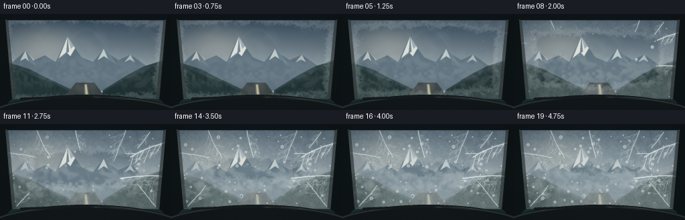
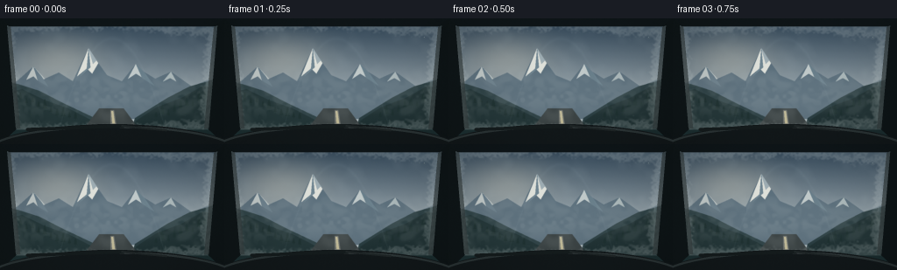

CODING AGENTS AS PIXEL WORLD MODELS
traex/GPT-5.6-Sol · phygen_114
点击播放 · 原生 RGB 像素
逐轮保存的候选
回放视频、检查图与代码变化。
每份候选均可单独播放。实际图片检查记录在下方工具轨迹中。
候选 01播放与检查图
点击播放 · 原生 RGB 像素


展开代码变化
--- 上一保存版本
+++ 本次保存版本
@@ -0,0 +1,318 @@
+from pathlib import Path
+import math
+import numpy as np
+import cv2
+import artifact_io
+
+# Deterministic, entirely procedural timelapse.
+SEED = 114
+rng = np.random.default_rng(SEED)
+W, H, N = 256, 144, 20
+S = 3
+w, h = W*S, H*S
+
+
+def smoothstep(a, b, x):
+ x = np.clip((x-a)/(b-a), 0.0, 1.0)
+ return x*x*(3-2*x)
+
+
+def noise_field(height, width, scales=(12, 28, 65), seed=0):
+ rr = np.random.default_rng(seed)
+ out = np.zeros((height, width), np.float32)
+ amp = 1.0
+ total = 0.0
+ for scale in scales:
+ gh = max(3, height//scale + 3)
+ gw = max(3, width//scale + 3)
+ grid = rr.random((gh, gw), dtype=np.float32)
+ layer = cv2.resize(grid, (width, height), interpolation=cv2.INTER_CUBIC)
+ out += amp*layer
+ total += amp
+ amp *= 0.52
+ out /= total
+ return np.clip(out, 0, 1)
+
+
+def blend(img, color, alpha):
+ if np.ndim(alpha) == 2:
+ alpha = alpha[..., None]
+ return img*(1-alpha) + np.asarray(color, np.float32)*alpha
+
+# -----------------------------------------------------------------------------
+# Mountain landscape seen through the windshield.
+yy, xx = np.mgrid[0:h, 0:w]
+xn, yn = xx/S, yy/S
+base = np.empty((h, w, 3), np.float32)
+top = np.array([43, 64, 82], np.float32)
+horizon = np.array([183, 194, 197], np.float32)
+g = np.clip(yn/112.0, 0, 1)[..., None]
+base[:] = top*(1-g) + horizon*g
+
+# Cold dawn glow behind thin high cloud.
+glow = np.exp(-(((xn-67)/50)**2 + ((yn-47)/29)**2))
+base = blend(base, [218, 213, 195], 0.33*glow)
+high_cloud = noise_field(h, w, (35, 90, 180), 8)
+base = blend(base, [174, 188, 194], np.clip((high_cloud-.52)*.20, 0, .07))
+
+# Draw a scenic layer into an image using high-resolution coordinates.
+def poly(points, color, img=base):
+ pts = np.array([(int(x*S), int(y*S)) for x,y in points], np.int32)
+ cv2.fillPoly(img, [pts], tuple(float(c) for c in color), lineType=cv2.LINE_AA)
+
+# Remote jagged massif.
+far_profile = [(0,91),(0,80),(19,72),(38,55),(51,69),(67,62),(83,72),
+ (101,34),(112,51),(122,65),(139,72),(155,52),(164,61),
+ (177,69),(195,61),(219,78),(238,70),(256,81),(256,115),(0,115)]
+poly(far_profile, [91,111,124])
+# Cool atmospheric shading on lower mountain.
+farshade = np.clip((yn-55)/55,0,1)*((yn<116))
+far_region = (yn > np.interp(xn[0], [p[0] for p in far_profile[:-2]], [p[1] for p in far_profile[:-2]])[None,:]) if False else None
+# Snow streaks that lock the forms to a cold alpine environment.
+poly([(38,55),(30,70),(38,66),(43,71),(51,69)], [193,201,200])
+poly([(101,34),(88,66),(99,57),(105,63),(112,51)], [224,226,219])
+poly([(101,34),(106,52),(110,48),(112,51)], [159,174,180])
+poly([(155,52),(146,69),(155,63),(163,68),(164,61)], [193,202,202])
+poly([(195,61),(186,72),(194,68),(201,72)], [172,185,187])
+
+# Blue shadow striations on far faces.
+poly([(101,34),(99,57),(91,66),(103,56)], [111,133,145])
+poly([(38,55),(43,71),(55,78),(47,66)], [102,123,136])
+poly([(155,52),(162,68),(176,77),(164,61)], [104,126,138])
+
+# Midground valley walls, opening toward center.
+poly([(0,72),(20,75),(45,83),(70,96),(108,114),(116,144),(0,144)], [42,62,66])
+poly([(256,66),(237,72),(216,78),(191,91),(154,114),(144,144),(256,144)], [36,56,60])
+# Subtle ridgelines.
+poly([(0,87),(25,81),(52,94),(78,103),(109,119),(116,144),(0,144)], [29,48,50])
+poly([(256,81),(232,77),(207,91),(178,102),(151,120),(144,144),(256,144)], [27,45,47])
+
+# Valley floor and a wet mountain road leading into the distance.
+poly([(113,103),(141,103),(171,144),(82,144)], [53,61,62])
+poly([(126,105),(130,105),(136,144),(126,144)], [104,107,102])
+poly([(127,106),(129,106),(131,120),(128,120)], [198,189,150])
+# Pale road reflections.
+road_glint = np.exp(-((xn-127)/24)**2) * smoothstep(101,144,yn)
+base = blend(base, [104,112,110], .10*road_glint)
+
+# Small conifers along nearer ridges.
+def pine(img, x, y, size, color):
+ X, Y, q = int(x*S), int(y*S), int(size*S)
+ cv2.line(img, (X,Y-q//5), (X,Y+q//2), color, max(1,S//2), cv2.LINE_AA)
+ for f in (0.12,0.34,0.56):
+ cy = int(Y-q/2+q*f)
+ half = int(q*(0.13+0.21*f))
+ cv2.fillConvexPoly(img, np.array([[X,cy-int(q*.28)],[X-half,cy+int(q*.18)],[X+half,cy+int(q*.18)]],np.int32), color, cv2.LINE_AA)
+
+for x in list(range(2,88,7)) + list(range(178,255,7)):
+ if x < 100:
+ y = 83 + .37*x + rng.uniform(-3,2)
+ else:
+ y = 85 + .34*(256-x) + rng.uniform(-3,2)
+ pine(base, x, min(y,120), rng.uniform(7,13), (23,42,42))
+
+base = cv2.GaussianBlur(base, (0,0), .28*S)
+
+# Fixed glass aperture: trapezoidal windshield bounded by A-pillars/dashboard.
+glass = np.zeros((h,w), np.uint8)
+cv2.fillConvexPoly(glass, np.array([(8*S,8*S),(248*S,8*S),(239*S,127*S),(17*S,127*S)],np.int32), 255, cv2.LINE_AA)
+glass_f = glass.astype(np.float32)/255
+# Distance to aperture boundary drives edge-first condensation.
+dist = cv2.distanceTransform((glass>128).astype(np.uint8), cv2.DIST_L2, 5)/S
+maxd = 58.0
+film_noise = noise_field(h,w,(7,19,47),31)
+large_noise = noise_field(h,w,(34,80,160),41)
+# Lower arrival means a region fogs sooner. Bias the advancing/contact side (right).
+edge_arrival = np.clip(dist/maxd, 0, 1)
+arrival = edge_arrival + (film_noise-.5)*.19 + (large_noise-.5)*.12
+arrival -= .10*np.clip((xn-150)/110,0,1)
+arrival += .04*np.exp(-((xn-128)/38)**2) # preserve a central peephole a little longer
+
+# Dendritic frost segments, precomputed with growth times.
+segments = []
+branch_rng = np.random.default_rng(2718)
+def fern_branch(x, y, angle, length, depth, onset, duration, width):
+ if depth <= 0 or length < 2.2:
+ return
+ nseg = max(3, int(length/4.3))
+ px, py = x, y
+ theta = angle
+ for i in range(nseg):
+ theta += branch_rng.normal(0, .055)
+ seglen = length/nseg * branch_rng.uniform(.88,1.12)
+ nx, ny = px + math.cos(theta)*seglen, py + math.sin(theta)*seglen
+ st = onset + duration*(i/nseg)*.58
+ en = st + duration/max(nseg,3)*1.8
+ segments.append((px,py,nx,ny,st,en,width,depth))
+ # Alternating fern-like side branches.
+ if depth > 1 and i >= 1 and (i % 2 == 1 or i == nseg-2):
+ side = -1 if (i+depth)%2 else 1
+ a2 = theta + side*branch_rng.uniform(.52,.88)
+ fern_branch(px,py,a2,length*branch_rng.uniform(.31,.46),depth-1,
+ st, duration*.48, max(.35,width*.63))
+ if depth >= 3 and i == nseg//2:
+ fern_branch(px,py,theta-side*branch_rng.uniform(.62,.92),length*.32,depth-1,
+ st+.015,duration*.40,max(.35,width*.58))
+ px, py = nx, ny
+
+# Strongest growth begins where incoming fog first meets the cold glass.
+seed_data = [
+ (246,28, 2.84,55,4,.12,.66,1.15), (246,79, 3.22,65,4,.20,.62,1.05),
+ (233,124,4.00,47,3,.35,.48,.90), (10,43,.12,47,3,.29,.56,.90),
+ (55,9,1.26,45,3,.27,.51,.85), (113,9,1.58,42,4,.39,.48,.90),
+ (188,9,1.82,49,3,.23,.58,.95), (25,123,5.48,40,3,.43,.43,.75),
+ (224,12,2.18,31,3,.17,.40,.72)]
+for args in seed_data:
+ fern_branch(*args)
+
+# Condensation droplets: appearance ordered from contact side to left.
+drops = []
+drop_rng = np.random.default_rng(901)
+for i in range(94):
+ x = drop_rng.uniform(18,239)
+ y = drop_rng.uniform(16,119)
+ r = drop_rng.choice([.7,.9,1.15,1.45,1.8,2.3], p=[.15,.19,.23,.20,.15,.08])
+ ap = drop_rng.uniform(.10,.85) - .13*max(0,(x-150)/100)
+ freeze = ap + drop_rng.uniform(.18,.42)
+ drops.append((x,y,r,ap,freeze,drop_rng.uniform(0,6.28)))
+
+# A few conspicuous beads merge into short gravity trails in the timelapse.
+trail_drops = [(207,42,2.8,.19),(183,67,2.4,.31),(226,89,2.1,.38),(72,46,2.0,.50)]
+
+frames=[]
+for fi in range(N):
+ t = fi/(N-1)
+ # Timelapse easing: slow onset, then accelerated surface transformation.
+ p = smoothstep(0.02,.98,t)
+ img = base.copy()
+
+ # Valley fog moves right-to-left in layered banks. Larger banks arrive over time.
+ fog_alpha = np.zeros((h,w),np.float32)
+ for j,(cy,thick,speed,phase) in enumerate([(91,19,31,0),(75,14,44,91),(105,20,24,183)]):
+ shifted = np.roll(noise_field(h,w,(14+8*j,39+15*j,95),120+j), int((-speed*t+phase)*S), axis=1)
+ band = np.exp(-((yn-(cy + 4*np.sin((xn+phase-speed*t)/34))) / thick)**2)
+ wisps = smoothstep(.35,.72,shifted)
+ amount = (.16 + .31*smoothstep(.08,.74,t))*(.86 if j else 1)
+ fog_alpha = np.maximum(fog_alpha, amount*band*(.38+.62*wisps))
+ # Clear leading edge at first, then a visible contact front sweeps in from right.
+ front_x = 286 - 235*smoothstep(.02,.72,t)
+ contact = smoothstep(front_x-27,front_x+22,xn)
+ contact *= smoothstep(45,120,yn)
+ fog_alpha = np.maximum(fog_alpha, contact*(.08+.30*p)*(.72+.28*large_noise))
+ img = blend(img,[194,203,202],np.clip(fog_alpha,0,.58)*glass_f)
+
+ # The glass film blooms inward from the perimeter and contact side.
+ prog = .04 + .88*p
+ film = smoothstep(arrival-.10,arrival+.08,prog)
+ # Microtexture prevents a flat digital-looking overlay.
+ grain = cv2.GaussianBlur(film_noise,(0,0),.45*S)
+ film_alpha = film*(.30 + .30*grain)*glass_f
+ # Condensed glass locally blurs the world, as real microscopic droplets scatter light.
+ blurred = cv2.GaussianBlur(img,(0,0),(1.15+2.0*p)*S)
+ img = img*(1-(film_alpha*.72)[...,None]) + blurred*(film_alpha*.72)[...,None]
+ img = blend(img,[202,215,215],film_alpha*(.38+.18*p))
+ # Mottled translucent islands at the moving condensation boundary.
+ rim = np.clip(1-np.abs(arrival-prog)/.105,0,1)*glass_f
+ img = blend(img,[225,232,229],rim*(.08+.11*film_noise))
+
+ # Render water beads with refractive dark edge, bright upper highlight, then icy rims.
+ overlay = img.copy()
+ for x,y,r,ap,freeze,ang in drops:
+ q = smoothstep(ap,ap+.11,p)
+ if q <= 0: continue
+ R = max(2,int(r*S*(.74+.26*q)))
+ C=(int(x*S),int(y*S))
+ # Slight dark lower-right refraction.
+ cv2.circle(overlay,(C[0]+max(1,S//2),C[1]+max(1,S//2)),R,(75,92,95),-1,cv2.LINE_AA)
+ cv2.circle(overlay,C,max(1,R-1),(156,176,177),-1,cv2.LINE_AA)
+ cv2.circle(overlay,(C[0]-max(1,R//3),C[1]-max(1,R//3)),max(1,R//4),(231,239,236),-1,cv2.LINE_AA)
+ if p>freeze:
+ icy=smoothstep(freeze,freeze+.20,p)
+ cv2.circle(overlay,C,R,(225,234,232),max(1,int((.35+.7*icy)*S)),cv2.LINE_AA)
+ drop_mix = (.38+.18*p)*glass_f[...,None]
+ img = img*(1-drop_mix)+overlay*drop_mix
+
+ # Growing/descending larger beads, leaving faint frozen tracks.
+ trail_layer=np.zeros_like(img)
+ trail_a=np.zeros((h,w),np.float32)
+ for x,y,r,ap in trail_drops:
+ q=smoothstep(ap,ap+.42,p)
+ if q<=0: continue
+ y2=y+q*18
+ X=int(x*S); Y=int(y*S); Y2=int(y2*S); R=max(2,int(r*S))
+ cv2.line(trail_a,(X,Y),(X,Y2),.28,max(1,int(.75*S)),cv2.LINE_AA)
+ cv2.line(trail_layer,(X,Y),(X,Y2),(210,222,221),max(1,int(.55*S)),cv2.LINE_AA)
+ cv2.circle(trail_a,(X,Y2),R,.72,-1,cv2.LINE_AA)
+ cv2.circle(trail_layer,(X,Y2),R,(200,215,214),-1,cv2.LINE_AA)
+ cv2.circle(trail_layer,(X-R//3,Y2-R//3),max(1,R//4),(244,247,241),-1,cv2.LINE_AA)
+ a=np.clip(trail_a,0,.7)*glass_f
+ img=img*(1-a[...,None])+trail_layer*a[...,None]
+
+ # Crystalline frost fern: broad blue-white halo plus sharp branching core.
+ core=np.zeros((h,w),np.float32)
+ for x0,y0,x1,y1,st,en,width,depth in segments:
+ grow=smoothstep(st,en,p)
+ if grow<=0: continue
+ xe=x0+(x1-x0)*grow; ye=y0+(y1-y0)*grow
+ inten=.58+.10*depth
+ cv2.line(core,(int(x0*S),int(y0*S)),(int(xe*S),int(ye*S)),float(inten),
+ max(1,int(width*S)),cv2.LINE_AA)
+ core=np.clip(core,0,1)*glass_f
+ halo=cv2.GaussianBlur(core,(0,0),1.25*S)*glass_f
+ img=blend(img,[193,215,220],np.clip(halo*.43,0,.38))
+ img=blend(img,[238,245,240],np.clip(core*.76,0,.82))
+ # Sparkling nodes on mature frost, subtle and deterministic.
+ if p>.55:
+ spark=np.zeros((h,w),np.float32)
+ coords=np.argwhere(core>.7)
+ if len(coords):
+ sr=np.random.default_rng(800+fi)
+ for yx in coords[sr.choice(len(coords),min(22,len(coords)),replace=False)]:
+ sy,sx=int(yx[0]),int(yx[1])
+ cv2.circle(spark,(sx,sy),max(1,S//2),.55,-1,cv2.LINE_AA)
+ img=blend(img,[255,255,247],spark*glass_f)
+
+ # Very faint cold-blue windshield reflection arc.
+ refl=np.exp(-((yn-(23+.028*(xn-128)**2))/2.4)**2)*.035*glass_f
+ img=blend(img,[193,215,225],refl)
+
+ # Car interior foreground: roof edge, A-pillars, dashboard, wiper.
+ # These remain crisp over condensation, establishing that effects are on the glass.
+ car=np.zeros_like(img)
+ mask=np.zeros((h,w),np.float32)
+ def carpoly(points,color,a=1):
+ pts=np.array([(int(x*S),int(y*S)) for x,y in points],np.int32)
+ cv2.fillPoly(car,[pts],tuple(float(c) for c in color),cv2.LINE_AA)
+ cv2.fillPoly(mask,[pts],float(a),cv2.LINE_AA)
+ carpoly([(0,0),(256,0),(248,9),(8,9)],(15,22,25),1)
+ carpoly([(0,0),(9,7),(19,126),(0,144)],(15,22,24),1)
+ carpoly([(256,0),(247,7),(237,126),(256,144)],(14,21,23),1)
+ # Inner pillar highlights.
+ carpoly([(8,8),(12,10),(23,126),(18,126)],(53,62,63),.72)
+ carpoly([(248,8),(244,10),(233,126),(238,126)],(49,58,59),.72)
+ # Curved dashboard silhouette and cool upper trim.
+ cv2.ellipse(car,(128*S,160*S),(155*S,39*S),0,180,360,(18,24,26),-1,cv2.LINE_AA)
+ cv2.ellipse(mask,(128*S,160*S),(155*S,39*S),0,180,360,1,-1,cv2.LINE_AA)
+ cv2.ellipse(car,(128*S,153*S),(143*S,29*S),0,183,357,(47,54,55),max(1,2*S),cv2.LINE_AA)
+ cv2.ellipse(mask,(128*S,153*S),(143*S,29*S),0,183,357,.8,max(1,2*S),cv2.LINE_AA)
+ # Resting windshield wiper.
+ cv2.line(car,(31*S,127*S),(141*S,123*S),(21,28,29),3*S,cv2.LINE_AA)
+ cv2.line(mask,(31*S,127*S),(141*S,123*S),1,3*S,cv2.LINE_AA)
+ cv2.line(car,(139*S,123*S),(190*S,128*S),(31,38,39),2*S,cv2.LINE_AA)
+ cv2.line(mask,(139*S,123*S),(190*S,128*S),1,2*S,cv2.LINE_AA)
+ mask=np.clip(mask,0,1)
+ img=img*(1-mask[...,None])+car*mask[...,None]
+
+ # Stable exposure with restrained film grain (not temporal snow).
+ vignette=1-.13*np.clip(((xn-128)/150)**2+((yn-72)/105)**2,0,1)
+ img*=vignette[...,None]
+ fixedgrain=(noise_field(h,w,(2,5),177)-.5)*1.5
+ img+=fixedgrain[...,None]
+ img=np.clip(img,0,255).astype(np.uint8)
+ # Downsample with area filtering for anti-aliased, photographic detail.
+ img=cv2.resize(img,(W,H),interpolation=cv2.INTER_AREA)
+ frames.append(cv2.cvtColor(img,cv2.COLOR_BGR2RGB) if False else img)
+
+frames=np.stack(frames).astype(np.uint8)
+artifact_io.save(frames, Path(__file__).resolve().parent)
+print('saved', frames.shape, frames.dtype)
可观测工具轨迹
实际执行的命令与返回图片。
命令 1exit 0
/bin/bash -lc "cat prompt.txt && printf '\\n--- GENERATION_RULES.md ---\\n' && cat GENERATION_RULES.md && printf '\\n--- task_spec.json ---\\n' && cat task_spec.json"
命令 2exit 0
/bin/bash -lc "find . -maxdepth 3 -type f -printf '%p\\n' | sort && printf '\\n--- tools ---\\n' && command -v ffmpeg || true && command -v python3 || true && python3 - <<'PY' mods=['numpy','cv2','PIL','imageio','scipy'] for m in mods: try: x=__import__(m); print(m, 'OK', getattr(x,'__version__','')) except Exception as e: print(m,'NO',e) PY"
命令 3exit 0
/bin/bash -lc "sed -n '1,240p' artifact_io.py"
命令 4exit 0
/bin/bash -lc "cat > generate.py <<'PY'
from pathlib import Path
import math
import numpy as np
import cv2
import artifact_io
# Deterministic, entirely procedural timelapse.
SEED = 114
rng = np.random.default_rng(SEED)
W, H, N = 256, 144, 20
S = 3
w, h = W*S, H*S
def smoothstep(a, b, x):
x = np.clip((x-a)/(b-a), 0.0, 1.0)
return x*x*(3-2*x)
def noise_field(height, width, scales=(12, 28, 65), seed=0):
rr = np.random.default_rng(seed)
out = np.zeros((height, width), np.float32)
amp = 1.0
total = 0.0
for scale in scales:
gh = max(3, height//scale + 3)
gw = max(3, width//scale + 3)
grid = rr.random((gh, gw), dtype=np.float32)
layer = cv2.resize(grid, (width, height), interpolation=cv2.INTER_CUBIC)
out += amp*layer
total += amp
amp *= 0.52
out /= total
return np.clip(out, 0, 1)
def blend(img, color, alpha):
if np.ndim(alpha) == 2:
alpha = alpha[..., None]
return img*(1-alpha) + np.asarray(color, np.float32)*alpha
# -----------------------------------------------------------------------------
# Mountain landscape seen through the windshield.
yy, xx = np.mgrid[0:h, 0:w]
xn, yn = xx/S, yy/S
base = np.empty((h, w, 3), np.float32)
top = np.array([43, 64, 82], np.float32)
horizon = np.array([183, 194, 197], np.float32)
g = np.clip(yn/112.0, 0, 1)[..., None]
base[:] = top*(1-g) + horizon*g
# Cold dawn glow behind thin high cloud.
glow = np.exp(-(((xn-67)/50)**2 + ((yn-47)/29)**2))
base = blend(base, [218, 213, 195], 0.33*glow)
high_cloud = noise_field(h, w, (35, 90, 180), 8)
base = blend(base, [174, 188, 194], np.clip((high_cloud-.52)*.20, 0, .07))
# Draw a scenic layer into an image using high-resolution coordinates.
def poly(points, color, img=base):
pts = np.array([(int(x*S), int(y*S)) for x,y in points], np.int32)
cv2.fillPoly(img, [pts], tuple(float(c) for c in color), lineType=cv2.LINE_AA)
# Remote jagged massif.
far_profile = [(0,91),(0,80),(19,72),(38,55),(51,69),(67,62),(83,72),
(101,34),(112,51),(122,65),(139,72),(155,52),(164,61),
(177,69),(195,61),(219,78),(238,70),(256,81),(256,115),(0,115)]
poly(far_profile, [91,111,124])
# Cool atmospheric shading on lower mountain.
farshade = np.clip((yn-55)/55,0,1)*((yn<116))
far_region = (yn > np.interp(xn[0], [p[0] for p in far_profile[:-2]], [p[1] for p in far_profile[:-2]])[None,:]) if False else None
# Snow streaks that lock the forms to a cold alpine environment.
poly([(38,55),(30,70),(38,66),(43,71),(51,69)], [193,201,200])
poly([(101,34),(88,66),(99,57),(105,63),(112,51)], [224,226,219])
poly([(101,34),(106,52),(110,48),(112,51)], [159,174,180])
poly([(155,52),(146,69),(155,63),(163,68),(164,61)], [193,202,202])
poly([(195,61),(186,72),(194,68),(201,72)], [172,185,187])
# Blue shadow striations on far faces.
poly([(101,34),(99,57),(91,66),(103,56)], [111,133,145])
poly([(38,55),(43,71),(55,78),(47,66)], [102,123,136])
poly([(155,52),(162,68),(176,77),(164,61)], [104,126,138])
# Midground valley walls, opening toward center.
poly([(0,72),(20,75),(45,83),(70,96),(108,114),(116,144),(0,144)], [42,62,66])
poly([(256,66),(237,72),(216,78),(191,91),(154,114),(144,144),(256,144)], [36,56,60])
# Subtle ridgelines.
poly([(0,87),(25,81),(52,94),(78,103),(109,119),(116,144),(0,144)], [29,48,50])
poly([(256,81),(232,77),(207,91),(178,102),(151,120),(144,144),(256,144)], [27,45,47])
# Valley floor and a wet mountain road leading into the distance.
poly([(113,103),(141,103),(171,144),(82,144)], [53,61,62])
poly([(126,105),(130,105),(136,144),(126,144)], [104,107,102])
poly([(127,106),(129,106),(131,120),(128,120)], [198,189,150])
# Pale road reflections.
road_glint = np.exp(-((xn-127)/24)**2) * smoothstep(101,144,yn)
base = blend(base, [104,112,110], .10*road_glint)
# Small conifers along nearer ridges.
def pine(img, x, y, size, color):
X, Y, q = int(x*S), int(y*S), int(size*S)
cv2.line(img, (X,Y-q//5), (X,Y+q//2), color, max(1,S//2), cv2.LINE_AA)
for f in (0.12,0.34,0.56):
cy = int(Y-q/2+q*f)
half = int(q*(0.13+0.21*f))
cv2.fillConvexPoly(img, np.array([[X,cy-int(q*.28)],[X-half,cy+int(q*.18)],[X+half,cy+int(q*.18)]],np.int32), color, cv2.LINE_AA)
for x in list(range(2,88,7)) + list(range(178,255,7)):
if x < 100:
y = 83 + .37*x + rng.uniform(-3,2)
else:
y = 85 + .34*(256-x) + rng.uniform(-3,2)
pine(base, x, min(y,120), rng.uniform(7,13), (23,42,42))
base = cv2.GaussianBlur(base, (0,0), .28*S)
# Fixed glass aperture: trapezoidal windshield bounded by A-pillars/dashboard.
glass = np.zeros((h,w), np.uint8)
cv2.fillConvexPoly(glass, np.array([(8*S,8*S),(248*S,8*S),(239*S,127*S),(17*S,127*S)],np.int32), 255, cv2.LINE_AA)
glass_f = glass.astype(np.float32)/255
# Distance to aperture boundary drives edge-first condensation.
dist = cv2.distanceTransform((glass>128).astype(np.uint8), cv2.DIST_L2, 5)/S
maxd = 58.0
film_noise = noise_field(h,w,(7,19,47),31)
large_noise = noise_field(h,w,(34,80,160),41)
# Lower arrival means a region fogs sooner. Bias the advancing/contact side (right).
edge_arrival = np.clip(dist/maxd, 0, 1)
arrival = edge_arrival + (film_noise-.5)*.19 + (large_noise-.5)*.12
arrival -= .10*np.clip((xn-150)/110,0,1)
arrival += .04*np.exp(-((xn-128)/38)**2) # preserve a central peephole a little longer
# Dendritic frost segments, precomputed with growth times.
segments = []
branch_rng = np.random.default_rng(2718)
def fern_branch(x, y, angle, length, depth, onset, duration, width):
if depth <= 0 or length < 2.2:
return
nseg = max(3, int(length/4.3))
px, py = x, y
theta = angle
for i in range(nseg):
theta += branch_rng.normal(0, .055)
seglen = length/nseg * branch_rng.uniform(.88,1.12)
nx, ny = px + math.cos(theta)*seglen, py + math.sin(theta)*seglen
st = onset + duration*(i/nseg)*.58
en = st + duration/max(nseg,3)*1.8
segments.append((px,py,nx,ny,st,en,width,depth))
# Alternating fern-like side branches.
if depth > 1 and i >= 1 and (i % 2 == 1 or i == nseg-2):
side = -1 if (i+depth)%2 else 1
a2 = theta + side*branch_rng.uniform(.52,.88)
fern_branch(px,py,a2,length*branch_rng.uniform(.31,.46),depth-1,
st, duration*.48, max(.35,width*.63))
if depth >= 3 and i == nseg//2:
fern_branch(px,py,theta-side*branch_rng.uniform(.62,.92),length*.32,depth-1,
st+.015,duration*.40,max(.35,width*.58))
px, py = nx, ny
# Strongest growth begins where incoming fog first meets the cold glass.
seed_data = [
(246,28, 2.84,55,4,.12,.66,1.15), (246,79, 3.22,65,4,.20,.62,1.05),
(233,124,4.00,47,3,.35,.48,.90), (10,43,.12,47,3,.29,.56,.90),
(55,9,1.26,45,3,.27,.51,.85), (113,9,1.58,42,4,.39,.48,.90),
(188,9,1.82,49,3,.23,.58,.95), (25,123,5.48,40,3,.43,.43,.75),
(224,12,2.18,31,3,.17,.40,.72)]
for args in seed_data:
fern_branch(*args)
# Condensation droplets: appearance ordered from contact side to left.
drops = []
drop_rng = np.random.default_rng(901)
for i in range(94):
x = drop_rng.uniform(18,239)
y = drop_rng.uniform(16,119)
r = drop_rng.choice([.7,.9,1.15,1.45,1.8,2.3], p=[.15,.19,.23,.20,.15,.08])
ap = drop_rng.uniform(.10,.85) - .13*max(0,(x-150)/100)
freeze = ap + drop_rng.uniform(.18,.42)
drops.append((x,y,r,ap,freeze,drop_rng.uniform(0,6.28)))
# A few conspicuous beads merge into short gravity trails in the timelapse.
trail_drops = [(207,42,2.8,.19),(183,67,2.4,.31),(226,89,2.1,.38),(72,46,2.0,.50)]
frames=[]
for fi in range(N):
t = fi/(N-1)
# Timelapse easing: slow onset, then accelerated surface transformation.
p = smoothstep(0.02,.98,t)
img = base.copy()
# Valley fog moves right-to-left in layered banks. Larger banks arrive over time.
fog_alpha = np.zeros((h,w),np.float32)
for j,(cy,thick,speed,phase) in enumerate([(91,19,31,0),(75,14,44,91),(105,20,24,183)]):
shifted = np.roll(noise_field(h,w,(14+8*j,39+15*j,95),120+j), int((-speed*t+phase)*S), axis=1)
band = np.exp(-((yn-(cy + 4*np.sin((xn+phase-speed*t)/34))) / thick)**2)
wisps = smoothstep(.35,.72,shifted)
amount = (.16 + .31*smoothstep(.08,.74,t))*(.86 if j else 1)
fog_alpha = np.maximum(fog_alpha, amount*band*(.38+.62*wisps))
# Clear leading edge at first, then a visible contact front sweeps in from right.
front_x = 286 - 235*smoothstep(.02,.72,t)
contact = smoothstep(front_x-27,front_x+22,xn)
contact *= smoothstep(45,120,yn)
fog_alpha = np.maximum(fog_alpha, contact*(.08+.30*p)*(.72+.28*large_noise))
img = blend(img,[194,203,202],np.clip(fog_alpha,0,.58)*glass_f)
# The glass film blooms inward from the perimeter and contact side.
prog = .04 + .88*p
film = smoothstep(arrival-.10,arrival+.08,prog)
# Microtexture prevents a flat digital-looking overlay.
grain = cv2.GaussianBlur(film_noise,(0,0),.45*S)
film_alpha = film*(.30 + .30*grain)*glass_f
# Condensed glass locally blurs the world, as real microscopic droplets scatter light.
blurred = cv2.GaussianBlur(img,(0,0),(1.15+2.0*p)*S)
img = img*(1-(film_alpha*.72)[...,None]) + blurred*(film_alpha*.72)[...,None]
img = blend(img,[202,215,215],film_alpha*(.38+.18*p))
# Mottled translucent islands at the moving condensation boundary.
rim = np.clip(1-np.abs(arrival-prog)/.105,0,1)*glass_f
img = blend(img,[225,232,229],rim*(.08+.11*film_noise))
# Render water beads with refractive dark edge, bright upper highlight, then icy rims.
overlay = img.copy()
for x,y,r,ap,freeze,ang in drops:
q = smoothstep(ap,ap+.11,p)
if q <= 0: continue
R = max(2,int(r*S*(.74+.26*q)))
C=(int(x*S),int(y*S))
# Slight dark lower-right refraction.
cv2.circle(overlay,(C[0]+max(1,S//2),C[1]+max(1,S//2)),R,(75,92,95),-1,cv2.LINE_AA)
cv2.circle(overlay,C,max(1,R-1),(156,176,177),-1,cv2.LINE_AA)
cv2.circle(overlay,(C[0]-max(1,R//3),C[1]-max(1,R//3)),max(1,R//4),(231,239,236),-1,cv2.LINE_AA)
if p>freeze:
icy=smoothstep(freeze,freeze+.20,p)
cv2.circle(overlay,C,R,(225,234,232),max(1,int((.35+.7*icy)*S)),cv2.LINE_AA)
drop_mix = (.38+.18*p)*glass_f[...,None]
img = img*(1-drop_mix)+overlay*drop_mix
# Growing/descending larger beads, leaving faint frozen tracks.
trail_layer=np.zeros_like(img)
trail_a=np.zeros((h,w),np.float32)
for x,y,r,ap in trail_drops:
q=smoothstep(ap,ap+.42,p)
if q<=0: continue
y2=y+q*18
X=int(x*S); Y=int(y*S); Y2=int(y2*S); R=max(2,int(r*S))
cv2.line(trail_a,(X,Y),(X,Y2),.28,max(1,int(.75*S)),cv2.LINE_AA)
cv2.line(trail_layer,(X,Y),(X,Y2),(210,222,221),max(1,int(.55*S)),cv2.LINE_AA)
cv2.circle(trail_a,(X,Y2),R,.72,-1,cv2.LINE_AA)
cv2.circle(trail_layer,(X,Y2),R,(200,215,214),-1,cv2.LINE_AA)
cv2.circle(trail_layer,(X-R//3,Y2-R//3),max(1,R//4),(244,247,241),-1,cv2.LINE_AA)
a=np.clip(trail_a,0,.7)*glass_f
img=img*(1-a[...,None])+trail_layer*a[...,None]
# Crystalline frost fern: broad blue-white halo plus sharp branching core.
core=np.zeros((h,w),np.float32)
for x0,y0,x1,y1,st,en,width,depth in segments:
grow=smoothstep(st,en,p)
if grow<=0: continue
xe=x0+(x1-x0)*grow; ye=y0+(y1-y0)*grow
inten=.58+.10*depth
cv2.line(core,(int(x0*S),int(y0*S)),(int(xe*S),int(ye*S)),float(inten),
max(1,int(width*S)),cv2.LINE_AA)
core=np.clip(core,0,1)*glass_f
halo=cv2.GaussianBlur(core,(0,0),1.25*S)*glass_f
img=blend(img,[193,215,220],np.clip(halo*.43,0,.38))
img=blend(img,[238,245,240],np.clip(core*.76,0,.82))
# Sparkling nodes on mature frost, subtle and deterministic.
if p>.55:
spark=np.zeros((h,w),np.float32)
coords=np.argwhere(core>.7)
if len(coords):
sr=np.random.default_rng(800+fi)
for yx in coords[sr.choice(len(coords),min(22,len(coords)),replace=False)]:
sy,sx=int(yx[0]),int(yx[1])
cv2.circle(spark,(sx,sy),max(1,S//2),.55,-1,cv2.LINE_AA)
img=blend(img,[255,255,247],spark*glass_f)
# Very faint cold-blue windshield reflection arc.
refl=np.exp(-((yn-(23+.028*(xn-128)**2))/2.4)**2)*.035*glass_f
img=blend(img,[193,215,225],refl)
# Car interior foreground: roof edge, A-pillars, dashboard, wiper.
# These remain crisp over condensation, establishing that effects are on the glass.
car=np.zeros_like(img)
mask=np.zeros((h,w),np.float32)
def carpoly(points,color,a=1):
pts=np.array([(int(x*S),int(y*S)) for x,y in points],np.int32)
cv2.fillPoly(car,[pts],tuple(float(c) for c in color),cv2.LINE_AA)
cv2.fillPoly(mask,[pts],float(a),cv2.LINE_AA)
carpoly([(0,0),(256,0),(248,9),(8,9)],(15,22,25),1)
carpoly([(0,0),(9,7),(19,126),(0,144)],(15,22,24),1)
carpoly([(256,0),(247,7),(237,126),(256,144)],(14,21,23),1)
# Inner pillar highlights.
carpoly([(8,8),(12,10),(23,126),(18,126)],(53,62,63),.72)
carpoly([(248,8),(244,10),(233,126),(238,126)],(49,58,59),.72)
# Curved dashboard silhouette and cool upper trim.
cv2.ellipse(car,(128*S,160*S),(155*S,39*S),0,180,360,(18,24,26),-1,cv2.LINE_AA)
cv2.ellipse(mask,(128*S,160*S),(155*S,39*S),0,180,360,1,-1,cv2.LINE_AA)
cv2.ellipse(car,(128*S,153*S),(143*S,29*S),0,183,357,(47,54,55),max(1,2*S),cv2.LINE_AA)
cv2.ellipse(mask,(128*S,153*S),(143*S,29*S),0,183,357,.8,max(1,2*S),cv2.LINE_AA)
# Resting windshield wiper.
cv2.line(car,(31*S,127*S),(141*S,123*S),(21,28,29),3*S,cv2.LINE_AA)
cv2.line(mask,(31*S,127*S),(141*S,123*S),1,3*S,cv2.LINE_AA)
cv2.line(car,(139*S,123*S),(190*S,128*S),(31,38,39),2*S,cv2.LINE_AA)
cv2.line(mask,(139*S,123*S),(190*S,128*S),1,2*S,cv2.LINE_AA)
mask=np.clip(mask,0,1)
img=img*(1-mask[...,None])+car*mask[...,None]
# Stable exposure with restrained film grain (not temporal snow).
vignette=1-.13*np.clip(((xn-128)/150)**2+((yn-72)/105)**2,0,1)
img*=vignette[...,None]
fixedgrain=(noise_field(h,w,(2,5),177)-.5)*1.5
img+=fixedgrain[...,None]
img=np.clip(img,0,255).astype(np.uint8)
# Downsample with area filtering for anti-aliased, photographic detail.
img=cv2.resize(img,(W,H),interpolation=cv2.INTER_AREA)
frames.append(cv2.cvtColor(img,cv2.COLOR_BGR2RGB) if False else img)
frames=np.stack(frames).astype(np.uint8)
artifact_io.save(frames, Path(__file__).resolve().parent)
print('saved', frames.shape, frames.dtype)
PY
python3 generate.py"命令 5exit 0
/bin/bash -lc "python3 - <<'PY'
from pathlib import Path
import numpy as np
from PIL import Image
p=Path('.')
z=np.load('pixels.npz')['pixels']
assert z.shape==(144,256,20), z.shape
assert z.dtype==np.uint32
files=sorted((p/'frames').glob('*.png'))
assert len(files)==20
arr=np.stack([np.array(Image.open(f).convert('RGB')) for f in files])
assert arr.shape==(20,144,256,3) and arr.dtype==np.uint8
# Confirm saved packed tensor reproduces PNG frames exactly.
unpacked=np.stack([(z>>16)&255,(z>>8)&255,z&255],axis=-1).transpose(2,0,1,3).astype(np.uint8)
assert np.array_equal(arr,unpacked)
means=arr.mean(axis=(1,2,3))
delta=np.abs(np.diff(arr.astype(np.int16),axis=0)).mean(axis=(1,2,3))
print('shape/dtype:',arr.shape,arr.dtype)
print('range:',arr.min(),arr.max())
print('frame means:',np.round(means,2).tolist())
print('adjacent MAE:',np.round(delta,2).tolist())
print('first-last MAE:',round(float(np.abs(arr[-1].astype(np.int16)-arr[0]).mean()),2))
print('artifacts:',[(x.name,x.stat().st_size) for x in [Path('pixels.npz'),Path('index.html'),Path('inspection.png'),Path('transition_check.png')]])
PY"命令 6exit 0
/bin/bash -lc 'python3 -m py_compile generate.py && git status --short 2>/dev/null || true'
保存候选 1 份；完成命令 6 次；可验证图片返回 0 张。原始 API 响应与完整日志保留在本地。